China Social Insurance Base Changes (2026): A Practical Cost-Control Guide for Global HR
Key takeaways
- Social insurance contribution bases are locally administered and periodically adjusted.
- Base resets can materially affect employer cost planning and employee net-pay expectations.
- The operational risk is usually timing and communication failure, not policy ignorance.
- EOR-supported teams should run pre-reset simulations and post-run reconciliations as standard controls.
What changed—and why this matters for cross-border teams
Social insurance contribution base updates in China continue to be managed through local administrative frameworks. For foreign employers, this creates a recurring challenge: legal timing and payroll timing are not always aligned unless someone actively manages the bridge. In fast-growing organizations, payroll teams may only notice impact after cost variance appears or employees question net-pay movement.
That is why this topic should be treated as a business control issue, not only a legal compliance issue. If finance, HR, payroll, and EOR operations are not synchronized, small timing gaps become expensive correction projects.
Policy and market context
As companies scale in China, social insurance administration complexity rises with geography. Multi-city hiring, role diversity, and compensation structure differences all increase the probability of mismatch when contribution bases reset. Organizations that maintain only one blended planning assumption usually face forecast drift, because local implementation windows and employee profiles vary in meaningful ways.
A stronger model is segmented planning: by city, by compensation shape, and by employee category. This approach enables realistic cost forecasting and better employee communication.
Where impact is typically felt first
Budget variance
Employers may see monthly employer-side contribution cost changes that were not reflected in original budget assumptions. This is often preventable through simulation discipline.
Employee relations pressure
When employee take-home pay shifts without context, payroll tickets spike and confidence drops quickly. Clear pre-payroll communication usually avoids escalation.
Compliance remediation overhead
Late implementation can force adjustments, reconciliations, and internal control reviews. Even when legal risk is manageable, operational overhead can be significant.
Action checklist for EOR buyers
1. Maintain a local reset calendar with source links and expected timing windows.
2. Run segmented simulation at least one cycle before effective date.
3. Align HR communication and manager talking points before payroll run.
4. Execute implementation with sample validation checks.
5. Reconcile expected vs actual outputs and archive evidence.
6. Review recurring exceptions and improve control design quarterly.
What to watch next
- Local reset timing may continue to vary, requiring proactive monitoring instead of annual-only reviews.
- CFO and HRBP teams are increasingly asking for city-level contribution forecasting transparency.
- Employee communication quality is becoming a practical differentiator in EOR service evaluation.
FAQ
Are social insurance contribution bases the same across all cities in China?
No. They are administered locally and can differ by jurisdiction.
Does this only affect employer cost?
No. Employee-side contributions and net pay can change as well.
Can companies delay implementation for convenience?
Generally not advisable; follow applicable local implementation guidance.
Is housing fund handled identically?
No. Housing fund typically has distinct local rules and should be managed separately.
What is the best early-warning KPI?
Time from local notice publication to approved payroll simulation.
Disclaimer
Informational only; not legal, tax, or actuarial advice.
Sources
- MOHRSS: http://www.mohrss.gov.cn/
- State Taxation Administration: https://www.chinatax.gov.cn/
- Local social insurance platform announcements
Need local employment support in China?
If you need a compliance-first Employer of Record (EOR) partner for hiring, payroll, and risk controls in China, China-Payroll.com can help your team evaluate the right setup.
Image Prompt Pack
Create a 16:9 hero image for article title: 'China Social Insurance Base Changes (2026): A Practical Cost-Control Guide for Global HR'. Scene: finance and payroll operations team reviewing contribution base dashboards in a modern office. Include motifs: benefi…